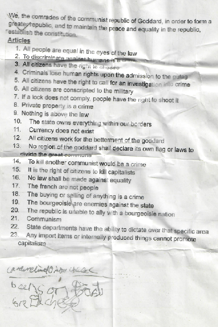

The Consitution of the Goddard
We, the comrades of the communist republic of Goddard, in order to form a greater republic, and to maintain the peace and equality in the republic, establish the Constitution.
- Article 1 All people are equal in the eyes of the law.
- Article 2 To discriminate against humans is a crime.
- Article 3 All citizens have the right to cheese.
- Article 4 Criminals lose human rights upon admission to the gulag.
- Article 5 All citizens have the right to call for an investigation into crime.
- Article 6 All citizens are automatically conscripted to the military unless they have a serious disability that prevents them from serving.
- Article 7 If a lock does not comply, people have the right to shoot it.
- Article 8 Private property is a crime
- Article 9 Nothing is above the law
- Article 10 The state owns everything within our borders.
- Article 11 Currency does not exist.
- Article 12 All citizens work for the betterment of the Goddard.
- Article 13 No region of the Goddard shall declare its own flag or laws to divide the great commune.
- Article 14 To kill another communist is a crime.
- Article 15 It is the right of citizens to kill capitalists.
- Article 16 No law shall be made against equality.
- Article 17 The french are not people
- Article 18 The buying and selling of anything is a crime.
- Article 19 The borgeousie are enemies against the state.
- Article 20 The republic is unable to ally with a borgeousie nation.
- Article 21 Communism ☭
- Article 22 State departments have the ability to dictate over that specific area.
- Article 23 Any import items or internally produced things cannot promote capitalism.

Signed by 3 members of the Politburo: Hector Banaghan, Rafael Martín Amelines and Jasper William Ronald Stocks